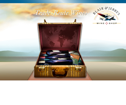
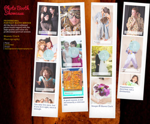
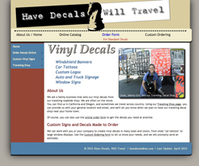
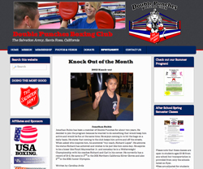

Joan Clark | Web Design, Graphics, and Animation
Creativity and Effective Web Design Aimed at Achieving Clients’ Goals
jclarx@comcast.net
707.280.0222
821 University St, Healdsburg, CA 95448
Work Samples
Joan Clark’s Work Samples
-

Web-Based Animation
Web-based animation is one of my favorite skills. I can provide motion and interactivity without the need for the out-moded Flash-based sites of yesteryear …
-

Interactive Photo Booth
This website design mimics old-fashioned photo-booth strips, and utilizes modern CSS and JavaScript to showcase this client’s fun photobooth shots…
-

Traveling Decals Website
Here is a website that will allow customers of this traveling auto-decal shop to order online and also to discover the shop‘s current location…
-

WordPress Website
In this WordPress site, we worked closely with the client to ensure they could edit and manage their own site. I reworked their logo, created a WP Child Theme and…